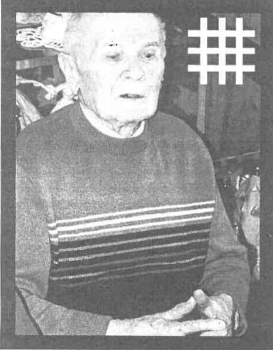

De data aceasta haiducului nu-i mai arde de politică. E prea neînsemnată și pălește sub puterea unei stele care, deși apune, e tot mai luminoasă. Mereu m-am gândit cu teamă la ziua în care nu vom mai avea eroi. Și de fiecare dată când câte unul dintre ei apune, România își plânge tăcut fiii. Cu lacrimi ascunse și un plâns mut de durere, țara rămâne orfană de tot ce a putut să ne dea mai bun. Am avut norocul de a cunoaște un haiduc veritabil, Gheorghe Ionescu. Acum, s-a dus în Legiunea Cerească, senin, drept și demn, așa cum a trăit. Pentru tinerii naționaliști, casa lui devenise un loc unde găseau mereu răspunsuri și primeau o ciudată energie moralizatoare. Și niciodată nu mi-am putut explica cum, după fiecare întâlnire cu „Domnul Ionescu”, plecam încărcat cu noi daruri spirituale.
Pe el soarta l-a înzestrat cu un har deosebit. Reușea să schimbe oamenii dintr-o privire și două cuvinte. Despre Căpitan spunea: „Omul acesta a zguduit societatea românescă din temelii. Era de o forță spirituală deosebită. Eu n-am mai întâlnit în viața mea un om cu atâta forță. Lângă el te simțeai puternic”. Ei bine, același lucru l-am simțit și eu la ultima întâlnire cu domnul Ionescu, de parcă în el încolțise dintr-o sămânță floarea puterii Căpitanului. Boala îl țintuise în pat, dar în ochi purta aceeași lumină. S-a scuzat că nu poate sta drept în fața noastră, a celor care îl ascultam uimiți cum ne vorbea senin despre valorile Mișcării Legionare. Ne-a spus că prin noi continuă lupta sa. Ne-a mai spus să nu renunțăm și să purtăm biruința în noi.
S-a născut în a patra zi de decembrie a anului 1915, la Roșiorii de Vede. 20 de ani din viață i-a petrecut prin temnițe. Primi cinci, pentru că s-a împotrivit lui Antonescu, restul, pentru că regimul comunist s-a temut de puterea spirituală a legionarilor în rândul cărora se formase ca om. Prea multă suferință pentru un om a cărui singură armă a fost iubirea, după cum chiar el spunea: „Mișcarea Legionară ne-a învățat să iubim necondiționat omul, indiferent de originea lui”. Odată cu venirea comuniștilor s-a ascuns prin țară. Și ani la rând le-a trebuit comuniștilor să-l prindă. Și nu l-ar fi prins, dacă dorul de casă nu l-ar fi mânat înapoi la Roșiorii de Vede.
Și-n temniță, chinuit în celulă l-a găsit pe Dumnezeu. „Am supraviețuit pentru că m-am rugat la Dumnezeu. Da, l-am găsit și în închisoare, nu numai în Biserică.”
După decretul de eliberare din '64, a fost obligat să se stabilească la Brașov. A lucrat ca fotograf, pentru că vremurile nu i-au permis să se ocupe de plantele, pe care le studiase la Școala Superioară de Horticultură din București. Și deși regimul îl supraveghea atent, niciodată nu a încetat să simtă și să trăiască în spirit legionar. La Brașov s-a înconjurat de tineri, pe care i-a atras prin discursul său simplu, dar cu har. Avea mereu un aer vesel. Și oricât de posac ai fi fost, uitai tot răul de față cu el.
Harul domnului Ionescu a fost că a reușit ca, printr-o sfântă simplicitate, să vadă dincolo de aparențe. O lecție importantă pe care am primit-o de la el a fost aceea că prin cercetarea unei stări politice nu facem altceva decât să complicăm lucrurile. Dacă ceva este putred în țară, pui mâna să îl îndrepți, nu să-l cercetezi la nesfârșit. De pildă, despre starea politicii spunea că am putea să o reparăm ușor, prin educație. Spunea că „Mișcarea Legionară nu îmbunătățește lucrurile prin legi, ci prin om, prin educația creștină a individului. Pentru că dacă oamenii nu sunt educați, oricât de bună ar fi legea, ajunge să fie aplicată prost sau imoral. Din decadență morală am pierdut multe în istorie și nu pentru că nu am fi avut legi bune.” Haiducul nu s-a împăcat niciodată cu politica fără de morală. Și, deși avea morala în piept, nu s-a apropiat de politică, pentru că sacrificiul i-a fost mai de preț. Noi n-am făcut politică. Noi am făcut un sacrificiu pentru neamul românesc. Ne-am sacrificat pentru salvarea morală a lumii. Eu sunt convins că atunci când se va schimba structura morală va fi bine în țară.

ȘI-A GĂSIT FERICIREA ÎN SACRIFICIU. POATE TU, CARE CITEȘTI RÂNDURILE ACESTEA, VEI ÎNȚELEGE DIFICIL ESENȚA FERICIRII DIN SACRIFICIU ȘI AȘTEPTAREA ÎN LANȚURI A BIRUINȚEI. „MOMENTELE CELE MAI SUBLIME PE CARE LE-AM AVUT ÎN VIAȚA MEA AU FOST ÎN ÎNCHISOARE, NU ÎN LIBERTATE. ÎN ÎNTUNERICUL ÎNCHISORII. AU FOST SUTE, MULȚI, CEI CARE SE SIMȚEAU FERICIȚI. ȘI AU MURIT ÎN ÎNCHISOARE, PENTRU BINELE NEAMULUI. NU PENTRU BINELE LOR S-AU SACRIFICAT, CĂCI ATUNCI NU ESTE VORBA DE SACRIFICIU, CI PENTRU BINELE CELUI DE-APROAPE. CHIAR DACĂ AM TRECUT PRIN PATIMI, NU MĂ ÎNDOIESC DE BIRUINȚA MIȘCĂRII LEGIONARE. PENTRU CĂ EA ÎN SIMȚĂMINTE SE CONFUNDĂ CU NEAMUL ROMÂNESC. DOAR DACĂ NEAMUL PIERE, SE DUCE ȘI LEGIUNEA. DOAR ATUNCI!” NEAMUL NU VA PIERI, EROII NU PIER, BIRUINȚA VA VENI.